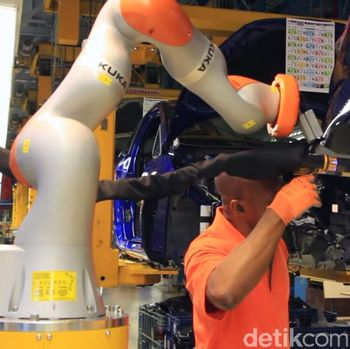

Revolusi Industri 1.0
Revolusi Industri pertama dimulai pada abad ke-18, yang ditandai dengan munculnya mesin uap, peningkatan produksi tekstil, dan perubahan besar dalam sektor manufaktur.

Penjelasan
Pada revolusi industri pertama terjadi perubahan secara besar-besaran di bidang pertanian, manufaktur, pertambangan, transportasi dan teknologi. Jika pada masa itu masih banyak pekerjaan yang mengandalkan tenaga manusia dan hewan meskipun memiliki banyak kendala yang cukup besar akibat keterbatasan ketersedian tenaga-tenaga yang dihasilkan Namun, setelah adanya revolusi industri 1.0 semuanya berubah ketika ditemukannya sebuah alat penenun benang mekanik pada tahun 1784 oleh James Watt. Hal ini menyebabkan tenaga manusia maupun tenaga hewan tidak lagi dibutuhkan yang mengakibatkan banyaknya pengangguran meski jumlah produksinya meningkat. Penemuan mesin uap ini meningkat penghasilan perkapita negara menjadi enam kali lipat Perubahan pada moda transportasi, seperti transportasi laut yang menggunakan tenaga angin meski angin tidak dapat diandalkan sepenuhnya. Maka dengan penemuan mesin uap James Watt, kapal dapat berjalan 24 jam dengan mengandalkan mesin uap.
Ciri-Ciri
Penggunaan mesin uap,
Pindah dari pertanian ke industri,
Berdirinya pabrik-pabrik,
Penggunaan bahan baku baru, seperti besi dan baja,
Penggunaan sumber energi baru, seperti batu bara, minyak bumi, dan mesin pembakaran dalam.
Sumber informasi
Klik Disini
Revolusi Industri 2.0
Revolusi kedua terjadi pada abad ke-19, dengan penggunaan listrik untuk produksi massal dan munculnya jalur perakitan.

Penjelasan
Revolusi industri 2.0 terjadi di awal abad ke-19 sampai abad ke-20 ditandai dengan munculnya listrik yang membuat hasil produksi jauh lebih murah daripada sebelumnya. Akan tetapi, kendala lain yang ditemukan pada masa tersebut, menyangkut masalah dalam proses produksi, yaitu pada bagian proses transportasi.
Guna mempermudah proses produksi di dalam pabrik yang biasanya cukup luas, dibutuhkan alat transportasi yang dapat mengangkut barang berat, seperti mobil sangat dibutuhkan. Sebelum masa revolusi industri 2.0 proses pengerjaan perakitan mobil hanya dilakukan di tempat yang sama.
Di tahun 1913 terciptanya sebuah Lini Produksi yang menggunakan ban berjalan. Penemuan tersebut mengakibatkan produksi mobil yang sebelumnya dirakit oleh banyak orang kini dapat diproduksi secara masal. Hal itu disebabkan, proses produksi diubah total dengan memberikan latihan kepada pekerja agar dapat bekerja menekuni satu bidang dan terorganisir sesuai dengan spesialisasinya, bekerja mengurus satu bagian saja.
Ciri-Ciri
Penemuan tenaga listrik yang dapat diaplikasikan pada mesin,
Penemuan arus listrik AC dan DC,
Inovasi produksi baja dan besi,
Penemuan pembangkit tenaga listrik,
Penemuan telepon.
Sumber informasi
Klik Disini
Revolusi Industri 3.0
Revolusi ketiga terjadi pada abad ke-20 dengan munculnya teknologi komputer dan otomatisasi di industri.

Penjelasan
Penemuan pada revolusi 3.0 berupa mesin penggerak, yang dapat berpikir secara otomatis seperti komputer dan robot.
Pada masa revolusi ini, terciptanya teknologi komputer menjadi pertanda cikal bakal kemudahan pekerjaan. Jika revolusi sebelumnya masih dikendalikan oleh manusia, maka pada revolusi industri 3.0 sudah menggunakan sistem otomatisasi yang dikontrol oleh komputer.
Di samping itu, sistem komunikasi juga telah berubah menjadi teknologi digital sehingga penyebaran akses informasi semakin cepat. Hal inilah yang membuat revolusi 3.0 memiliki sebutan, yaitu revolusi digital.
Berbagai penemuan seperti semikonduktor, disusul transistor, dan integrated chip membuat ukuran komputer semakin kecil, kebutuhan konsumsi daya listrik semakin sedikit.
Ciri-Ciri
Revolusi Industri 3.0 ditandai dengan penggunaan mesin yang dapat bergerak dan berpikir sendiri, seperti komputer dan robot,
Revolusi ini juga ditandai dengan kemajuan teknologi informasi dan komunikasi, seperti internet dan sistem informasi,
Revolusi Industri 3.0 memungkinkan pabrik untuk mengurangi ketergantungan pada tenaga kerja manusia,
Revolusi ini meningkatkan konsistensi dan kualitas produk,
Revolusi ini juga memungkinkan pengumpulan, pemrosesan, dan analisis data yang lebih efisien.
Sumber informasi
Klik Disini
Revolusi Industri 4.0
Revolusi keempat saat ini melibatkan kecerdasan buatan, Internet of Things (IoT), dan teknologi canggih lainnya.

Penjelasan
Zaman revolusi industri 4.0 adalah tren di dunia industri yang menggabungkan teknologi otomatisasi dengan teknologi cyber. Era revolusi industri 4.0 telah menjadi topik perbincangan semua kalangan. Mulai dari pemerintah, masyarakat, bahkan perusahaan pun berusaha mengerahkan berbagai macam strategi untuk menghadapinya
Perubahan pada industri 4.0 telah mengembangkan teknologi berkelanjutan seperti internet, komputerisasi, microchip, internet of things (IoT), deep learning, kecerdasan buatan (artificial intelligence/AI), machine learning.
Hal yang pertama kali dirasakan dalam revolusi industri 4.0 adalah internet. Semua komputer tersambung ke sebuah jaringan raksasa. Fisik komputer makin kecil dan berubah menjadi sebesar genggaman tangan manusia. Kemampuan software semakin meningkat sehingga dapat merevolusi setiap proses mulai dari produksi hingga distribusi.
Sistem machine learning dapat mengumpulkan data historis sehingga terbentuk algoritma pada mesin pencarian.
Pengembangan IoT bersamaan dengan teknologi-teknologi baru seperti dalam bidang robotik, sains, dan lain sebagainya, membawa pengaruh yang cukup banyak bagi kehidupan di dunia. Banyak aktivitas seperti pekerjaan dan gaya hidup manusia yang berubah menjadi lebih praktis.
Contohnya teknologi yang belum pernah ada sebelumnya, seperti aplikasi ojek online, tarik tunai lewat ponsel, belanja lewat marketplace. Ojek online selain menjadi transportasi, pengembangan software dibuat berbagai macam fitur untuk tarik tunai, memesan makanan hingga menjadi kurir antar barang. Sama dengan ojek online, marketplace juga mengembangkan software sama seperti ojek online dengan penambahan fitur-fitur canggih yang bisa mempermudah aktivitas keseharian.
Ciri-Ciri
Otomatisasi dan Kecerdasan Buatan (AI),
Internet of Things (IoT),
Big Data dan Analitik,
Cloud Computing,
Manufaktur Cerdas (Smart Manufacturing).
Sumber informasi
Klik Disini